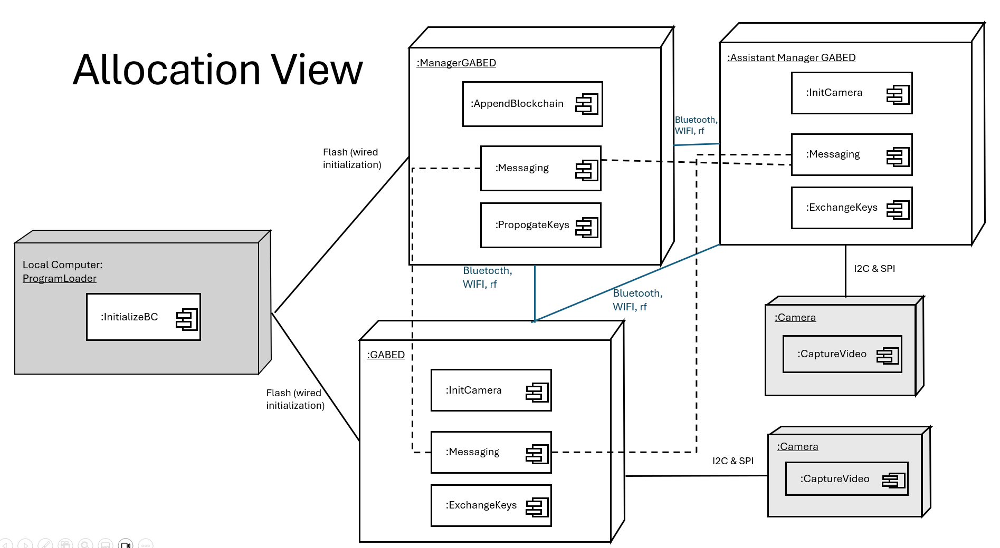
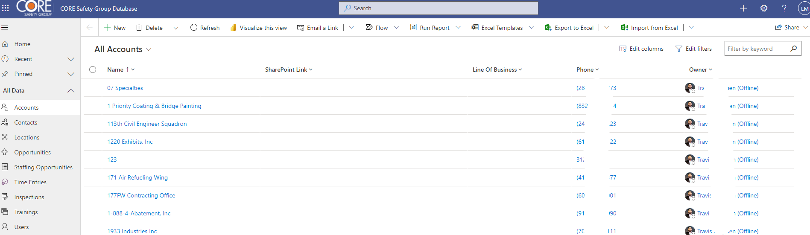
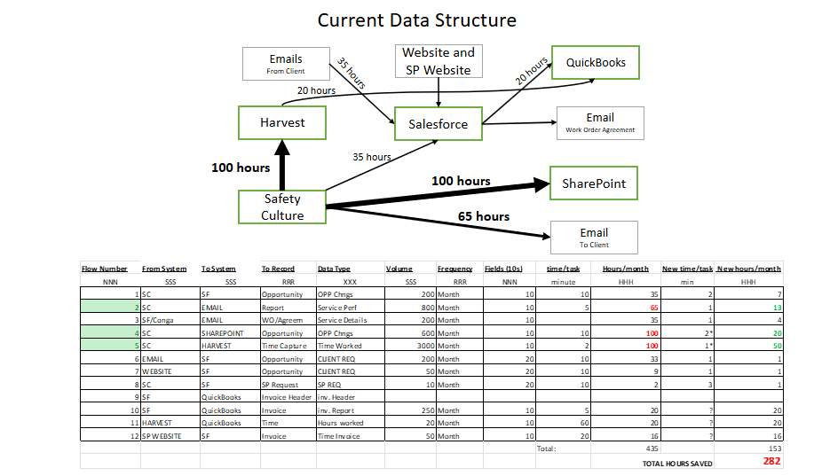
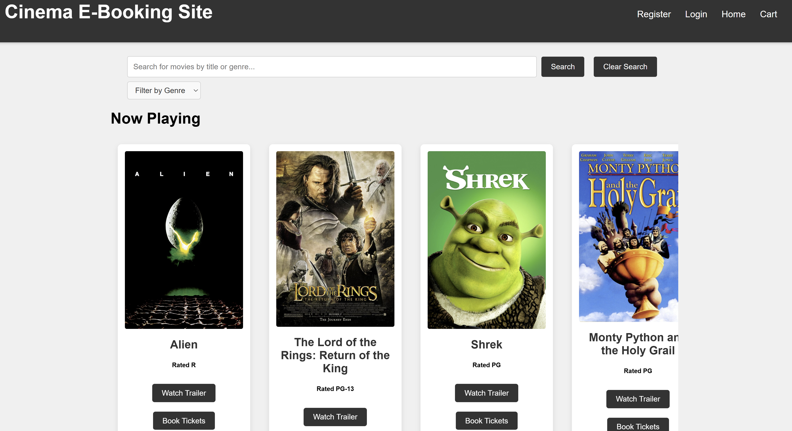
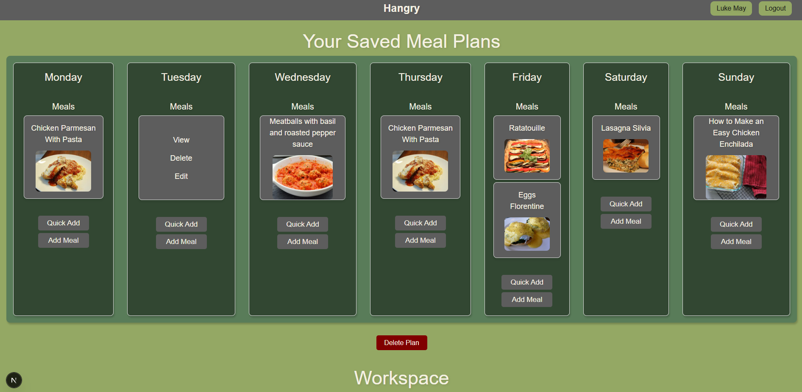
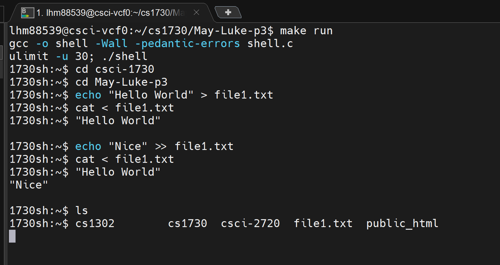
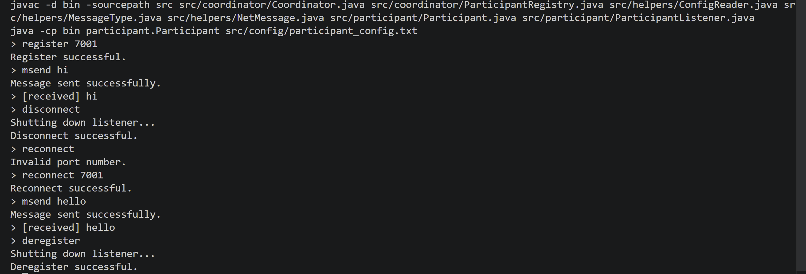
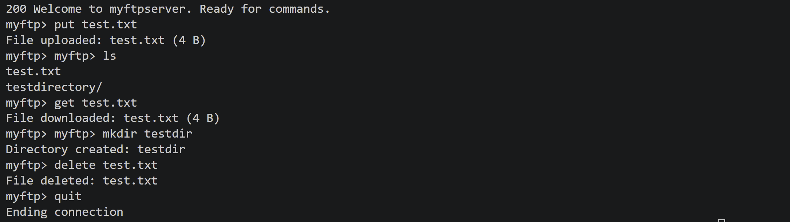
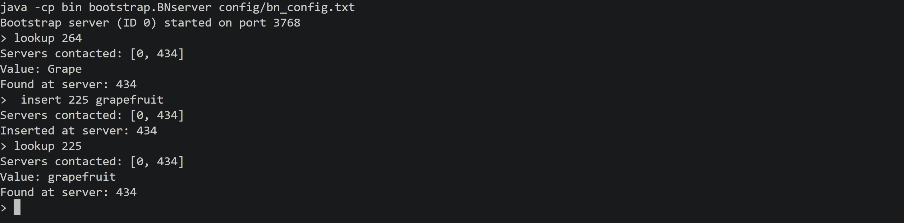

I am looking for a full time position in software development after graduation in Spring 2026.
Bachelor of Science in Computer Science
May 2026Minor in Business
GPA: 3.93
Graduated Summa Cum Laude | Phi Beta Kappa | UGA Presidential Scholar








